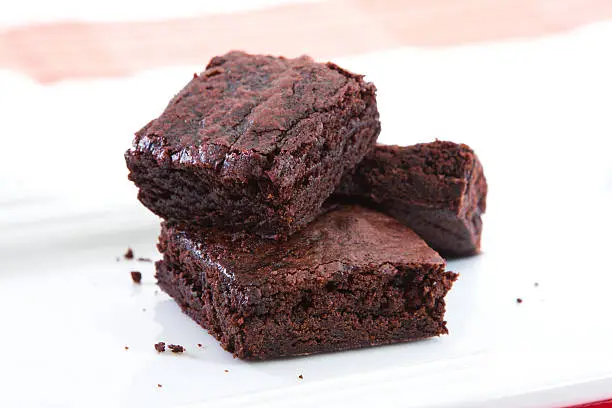

I find that this buffalo chicken dip is the perfect thing to have at a party of a family gathering. It taste super good and is fast to make.
Plus it all gose in one pot that you can bring with you and serve out of. It has a really good consistency and not to much spice. Altho if you like spicy
things you can simlpy add extra Franks Red Hot but make sure to not add to much because it will overpower the amazing flavors in the dip.

Ingredients
-
1 lb of shredded chicken
- 8oz of cream cheese
- 1 cup of ranch
- 3/4 cup of franks red hot sauce
- 1 1/2 cups of shredded cheddar cheese
Recipe
- Shred all of your chicken and add to your insapot.
- Put all of your other ingredients in you instapot and cook on low for three hours.
- After the dip has cooked enjoy however you would like.
Brownies
In my opinoin brownies are one of the best desserts and they go great with a glass of milk.
One downfall is if you cook them for to long they dont taste as good. So with this
great recipie I have the perfect time and tase so you will naver have to use another
recipie ever again.

Ingredients
- 20 TBSP of butter
- 2 cups of granulated sugat
- 4 eggs
- 4 TSP of vanilla extract
- 1 cup of melted milk chocolate chips
- 1 1/2 cups of all pourpus
- 1/2 cup of unsweetend cocoa powder
- 1 TSP of salt
- 2 cups of whole milk chocolate chips
Recipe
- Preheat your oven to 350 farenhight and line a 9x13 in pan with parchment paper of butter.
- Melt the butter and pour into a large mixing bowl.
- Whisk in the sugar until smooth.(About 30 seconds)
- Add eggs and vanilla until well mixed.
- Melt the 1 up of chocolate chips and Whisk into the butter mixture until smooth.
- Comdine the flour,cocoa pwder,and salt into the mixture.
- Fold in the remaining two cups of whole chocolate chips.
- Pour into the prepared pan and smooth out.
- Bake for 30-40 minutes and the let cool for 30 minutes.
- Then surve how ever you like.